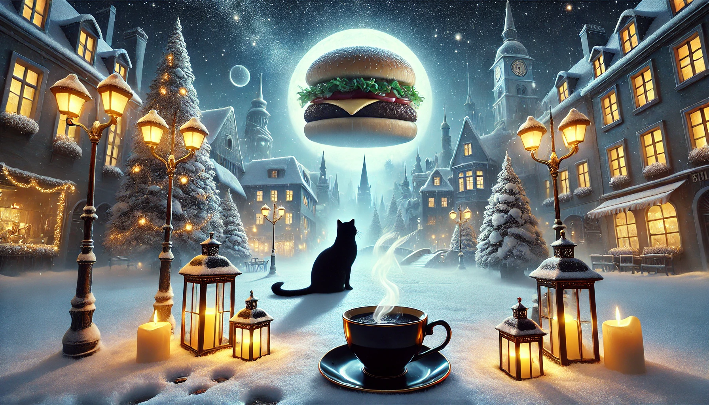
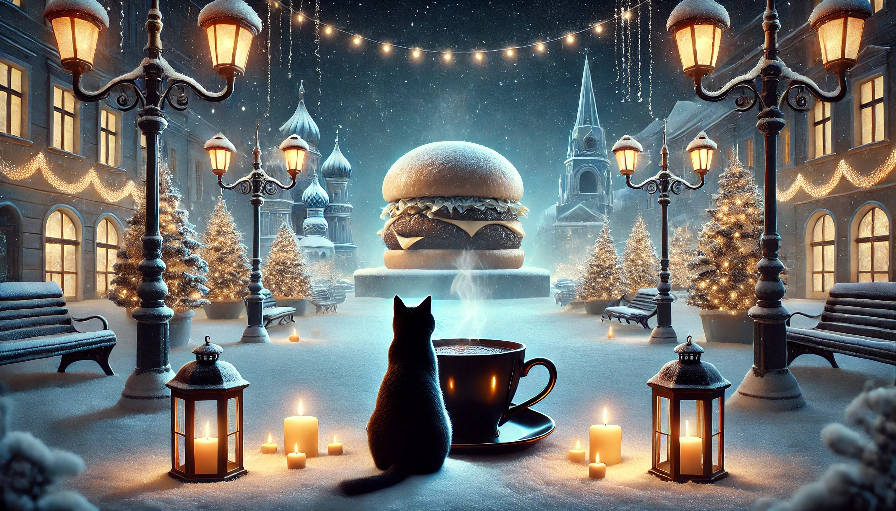
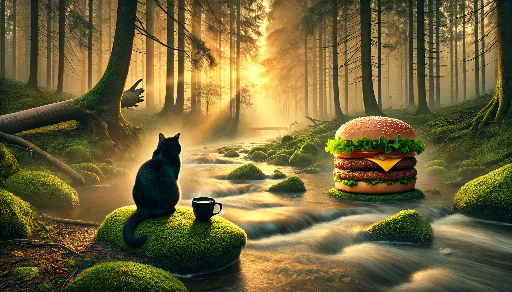

星の欠片みたいな泡が舌の上で弾ける。
静かなサウンドバスに包まれて、一日の輪郭がゆっくりほどけていく。黒猫がそっと近づき、今夜の物語を耳もとで始める。
黒猫の儀式
珈琲とバーガーが大好きな黒猫が開く癒ったりキッチン。幻想的な香りと癒るりな照明で、五感を解き放つ珈琲、バーガー儀式をお届けします。
月光チーズと漆黒バンズの温度差、アロマティックなスモーク、そして黒猫の囁き。
月光を浴びて育つ野菜、星屑を散りばめたスパイス、夢と現実の境界で焼き上げるパティ。それらをそっと抱きしめるのは、夜明け前にだけふくらむ暁バンズ。ひと口かじれば、夜空と朝の境目がふわっとほどけていく。私たちはその体験を、デジタルとリアルが溶け合う黒猫癒る体験へと再構築しています。
静かなサウンドバスに包まれて、一日の輪郭がゆっくりほどけていく。黒猫がそっと近づき、今夜の物語を耳もとで始める。
指先で触れると味が変わり、照明の色がそれに呼応して揺れる。“食べる”より、“選ぶ”。その瞬間が一番、自由かもしれない。
そこに月光のチーズが溶けていく。耳の奥では低い音が鳴り、味覚と記憶の境目があいまいになる。夜が、少しだけ甘くなる。
黒猫は珈琲を癒ったりと飲みながら夜の余韻を読み取り、あなたに最高に調和するバーガーをそっと差し出す。黒猫は珈琲を愛している。
0時〜夜明けの間だけ仕込む低温熟成パティ。旨味データを可視化し、毎晩カスタマイズ。
炭の香りと星明かりで発酵させた漆黒のバンズ。噛むたびに光る粒が弾けます。
月光のみで熟成させる幻のチーズ。青白い光を帯び、温度で風味が揺らぎます。
真夜中に芽吹くハーブ群を水耕ラボで再現。香りと記憶を連動させるプロファイル付き。
厨房には、音・光・香りをリアルタイムで制御する仕組みを組み込んでいる。ゲストの心拍や表情を読み取り、料理の温度や色合いをそっと調整。夜の記録は、次の夜の体験へと静かに形を変える。
低周波と光のリズムで、味覚の感じ方を微調整。
サウンドデザイナーがリアルタイムで夜の空気を整える。
夜ごとの記録と眠りのリズムから、今夜のカフェインを整える。
鹿児島から宮崎の青島まで、黒猫の夜会が開かれる3つの拠点。

鹿児島市中心部・夜光町の高台。桜島と海風を眺めながら、真夜中の儀式を静かに執り行います。

霧島の森にある研究拠点。温泉の香りが混ざる空間で、限定レシピの実験と音響テストを行います。

宮崎市青島のビーチフロント。海の音と潮の香りを同期させ、朝焼けと夜明けが混じり合う演出を用意しています。